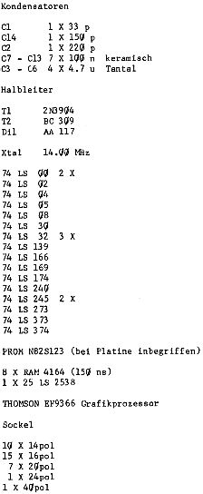
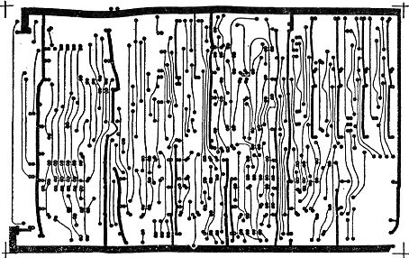

80-Bus Journal |
Jan/Feb/März 1984 · Ausgabe 1 |

Platinen-
Service


Im Augenblick können wir drei Platinen anbieten,fertig durchkontaktiert und glanzverzinnt:
80x24 Zeichen Karte DM 65.–
Floppy Controller Karte incl 2 Proms DM 70.–
Hochauflösende Grafik 256x512 incl. 1 Prom DM 65.–
Der Preis versteht sich einschließlich 14% Mehrwertsteuer, Porto und Verpackung. Es entstehen keine weiteren Kosten! (Sollte man beachten, wenn man Preisvergleiche macht. Was da manchmal an Verpackung und Bearbeitungskosten herbeigezaubert wird!)
Die Karten sind momentan (noch) sofort lieferbar.
Bestellung durch Überweisung des Betrages auf folgendes Konto (Bitte gewünschte Karte auf Abschnitt vermerken): ______-___ PSchA ____, Gabi Böhm
Es sind einige interessante Platinenlayouts hergestellt worden, die eine Produktion in Kleinserie lohnen würden. Wie immer ist eine Mindestbestellmenge erforderlich, damit eine Karte erschwinglich wird.
Hier nun die neuesten Produktionen:
1. Neue CPU-Karte von Karl Schulmeister mit PIO und CTC.
Diese Karte ist voll interruptfähig und hat außer der PIO und dem CTC noch den Vorteil, daß man durch Ändern einiger Lötbrücken einen vollwertigen EMUF (nach mc) mit 2K EPROM und 2K stat. RAM erhält. (Wird im nächsten Heft vorgestellt. Schaltungsbeschreibung bereits in dieser Ausgabe an anderer Stelle.
2. Endlich wird die Adapterkarte 80-Bus/ECB-Bus hergestellt. Georg Aßmann findet auf der Karte auch noch Platz, um die Decodierung für den Nascom-spezifischen /IOEXT unterzubringen, sodaß dem problemlosen Anschluß von zwei ECB-Europakarten an den 80-Bus ohne Löten nichts mehr im Wege stecht. So können sowohl die Floppy-Karte als auch die neue hochauflösende Grafik ohne Aufwand an den 80-Bus angeschlossen werden.
3. Busverlängerung für den ECB-Bus
Eine Karte, die es ermöglicht, neue Platinen leicht zugänglich zu testen, da diese außerhalb des 19" Rahmens von beiden Seiten erreicht werden können.
4. Busextender für 80-Bus
Eine Karte wie 3. aber für die Nascom-Karten. Diese Extenderkarte wurde noch nirgends angeboten.
Falls Interesse besteht, schicken Sie bitte eine unverbindliche Postkarte. Wir lassen die Karten dann in entsprechender Stückzahl herstellen. Besonders für Nr 4 haben sich bisher so wenige Interessenten gemeldet, daß eine Serie wohl kaum möglich wird.
Ihr Interesse entscheidet über das Ja oder Nein.
| Seite 6 von 52 |
|---|